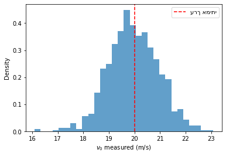

11.3. רעש מדידה: default_rng ו-normal#
עד עכשיו השתמשנו ב-rng.normal(...) “מאחורי הקלעים” כדי לדמות נתוני ניסוי (משבוע 8 ואילך). עכשיו, כשיש כלים סטטיסטיים אמיתיים, שווה לעצור ולשאול: למה דווקא ההתפלגות הנורמלית מדמה רעש מדידה כל כך טוב?
התשובה בקצרה: כשגורמי שגיאה קטנים רבים ובלתי-תלויים מצטברים (רעד יד, טמפרטורה, זמן תגובה…), הסכום שלהם נוטה להתפלגות נורמלית — זו לא בחירה שרירותית.
import numpy as np
import matplotlib.pyplot as plt
rng = np.random.default_rng(0)
11.3.1. דוגמה: מ-1000 “מדידות” סימולציה, להיסטוגרמה#
v0_true = 20.0
sigma_instrument = 1.0
simulated_measurements = rng.normal(v0_true, sigma_instrument, size=1000)
fig, ax = plt.subplots()
ax.hist(simulated_measurements, bins=30, density=True, color="tab:blue", alpha=0.7)
ax.axvline(v0_true, color="red", ls="--", label="ערך אמיתי")
ax.set_xlabel(r"$v_0$ measured (m/s)")
ax.set_ylabel("Density")
ax.legend()
plt.show()
print("ממוצע 1000 המדידות:", simulated_measurements.mean())
print("סטיית תקן:", simulated_measurements.std(ddof=1))

ממוצע 1000 המדידות: 19.951971723237012
סטיית תקן: 0.9772417054261473
ככל שמדמים יותר “מדידות” (1000 כאן, לעומת 8 בניסוי האמיתי שלנו), הממוצע מתקרב יותר ל-v0_true, וההיסטוגרמה מתקרבת יותר לצורת הפעמון האופיינית להתפלגות הנורמלית — זו בדיוק הצדקת המודל שבו השתמשנו לאורך כל הקורס.
11.3.2. באג נפוץ: שכחת seed → תוצאות לא ניתנות לשחזור#
()np.random.default_rng (בלי seed) יוצר generator עם seed אקראי מהמערכת — כל הרצה חדשה של הנוטבוק תיתן תוצאות שונות. לדוח מעבדה (ולבדיקת קוד!) חשוב seed קבוע, כדי שאותה הרצה תמיד תיתן אותה תוצאה.
rng_no_seed_1 = np.random.default_rng()
rng_no_seed_2 = np.random.default_rng()
print(rng_no_seed_1.normal(0, 1, 3))
print(rng_no_seed_2.normal(0, 1, 3)) # תוצאות שונות! גם באותה הרצה
rng_seeded_1 = np.random.default_rng(42)
rng_seeded_2 = np.random.default_rng(42)
print(rng_seeded_1.normal(0, 1, 3))
print(rng_seeded_2.normal(0, 1, 3)) # זהות - ניתן לשחזור
[-0.91889547 -1.19363695 1.44009605]
[-1.20079306 0.81835277 1.05565117]
[ 0.30471708 -1.03998411 0.7504512 ]
[ 0.30471708 -1.03998411 0.7504512 ]
11.3.3. נסו בעצמכם#
דמו 500 מדידות עם \(\sigma\) כפול (2.0 במקום 1.0), וציירו את ההיסטוגרמה לצד ההיסטוגרמה המקורית. מה קורה לרוחב הפעמון?
# sim_wide = rng.normal(v0_true, 2.0, size=500)
# ...
פתרון
sim_wide = rng.normal(v0_true, 2.0, size=500)
fig, ax = plt.subplots()
ax.hist(simulated_measurements, bins=30, density=True, alpha=0.5, label=r"$\sigma=1.0$")
ax.hist(sim_wide, bins=30, density=True, alpha=0.5, label=r"$\sigma=2.0$")
ax.legend()
plt.show()
עם \(\sigma\) כפול, הפעמון רחב בערך פי 2 — מכשיר מדידה פחות מדויק מתבטא ברעש גדול יותר סביב הערך האמיתי, לא בהזזה שיטתית שלו.
11.3.4. בדקו את עצמכם#
from jupyterquiz import display_quiz
questions = [
{
"question": "למה חשוב לקבוע seed קבוע ל-default_rng בקוד ניתוח נתונים?",
"type": "multiple_choice",
"answers": [
{"answer": "כדי שהתוצאות יהיו ניתנות לשחזור בכל הרצה מחדש", "correct": True, "feedback": "נכון."},
{"answer": "כדי שהקוד ירוץ מהר יותר", "correct": False, "feedback": "לא קשור למהירות."},
{"answer": "בלי seed, הקוד לא רץ בכלל", "correct": False, "feedback": "לא נכון — זה פשוט ייתן תוצאות שונות בכל הרצה."},
{"answer": "כדי שהתוצאה תמיד תהיה קרובה יותר לערך התיאורטי", "correct": False, "feedback": "לא — seed לא משפר את הדיוק הפיזיקלי של הסימולציה, הוא רק קובע אילו מספרים אקראיים ספציפיים ייווצרו."}
]
}
]
display_quiz(questions)
11.3.5. תרגול עצמי#
דמו 2000 “מדידות טווח” בזווית 45° (v0_true=20, sigma=1.0 על v0, חשבו את הטווח לכל אחת), וחשבו איזה אחוז מהן נופל בתוך \(\pm 1\sigma\) מהממוצע. האם זה קרוב ל-68% הצפויים מהתפלגות נורמלית?
# ...
פתרון
theta = np.radians(45)
g = 9.8
v0_sim = rng.normal(20.0, 1.0, size=2000)
R_sim = v0_sim**2 * np.sin(2*theta) / g
mean_R, std_R = R_sim.mean(), R_sim.std(ddof=1)
within_1sigma = np.abs(R_sim - mean_R) < std_R
print(within_1sigma.mean() * 100, "%") # קרוב ל-68%, כצפוי מהתפלגות נורמלית